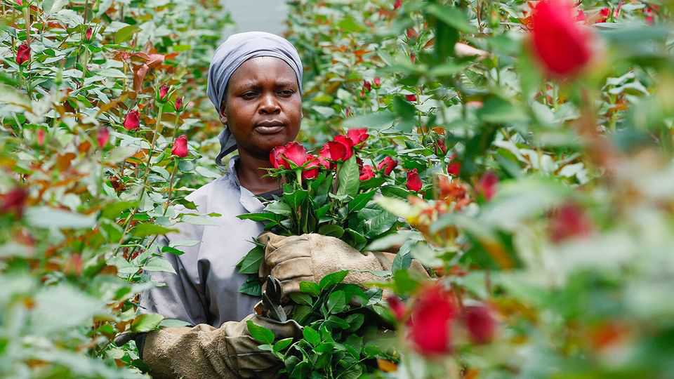
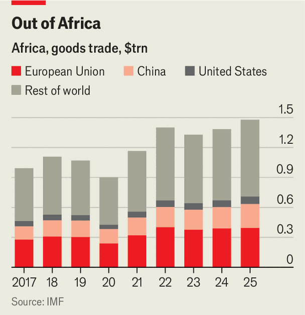

How to make African exports ethical again
The continent must reckon with a punishing green squeeze

Oct 15th 2026
Masai farm near Nairobi, Kenya’s capital, is arguably as green as they come. The temperature in its greenhouses is set by natural ventilation. Their proximity to the equator means the flowers get 12 hours of sunshine every day of the year, so artificial light is unnecessary. Any carbon emissions are tracked and reported, says Vincent Terer, the farm manager.
And yet green-minded policymakers in Europe are unimpressed. Each night seven to 18 tonnes of its flowers are flown out of Nairobi, over half on the 6,400km journey to the Netherlands. This puts them in the sights of retailers in Britain and Europe seeking to cut their carbon footprints. Some European supermarkets and food companies have of late banned, or said they plan to restrict, air freight from their fresh-produce supply chains. Some are switching from east Africa to places like Morocco, which can send exports by sea.

Low-carbon African exporters like those in Kenya’s blooming cut-flower industry contribute next to nothing to climate change. Africa has 18% of the world’s population but is responsible for less than 4% of historic carbon-dioxide emissions. Yet it is especially exposed to what Jodie Keane of odi, a think-tank in London, calls a “green squeeze”: rising costs and shrinking market access as richer countries adopt measures to decarbonise global supply chains. Between 1997 and 2021 the share of trade measures relating to environmental concerns notified to the World Trade Organisation rose from 8% to 19%. Those most heavily burdened include Africa’s small businesses and farms that risk losing vital trade as the effects of climate change start to be felt.
The carbon footprint of sunlit Kenyan flowers is smaller than those grown in heated European greenhouses in winter. East African flower and fruit exports often go as bellyhold cargo in scheduled passenger flights, adding only marginal emissions. Still, “the public has a visceral reaction to aeroplanes which they don’t have to greenhouses,” says David Beer of TradeMark Africa, a non-profit group in Nairobi.
A more immediate crunch for the continent’s exporters is coming in the form of regulation. The eu’s new deforestation rules, which require importers to prove that their cocoa, coffee, rubber, soya, palm oil, wood or cattle products were not produced on land that was forest before 2021, are due to take effect in December. African exporters face losing market access if they cannot provide adequate evidence.
After months of wrangling and two missed deadlines, the final rules have been eased a little. But countries such as Ethiopia, where many farmers grow coffee on tiny plots, are still not ready for the changes, says Ms Keane. She and her colleagues at ODI estimate that Ethiopia could lose almost two-thirds of its coffee exports to the eu, even though just 20 coffee plots have so far been linked to deforestation since 2020. Last year the bloc bought $765m of the country’s $2.65bn of coffee exports.
Another big worry is the carbon border adjustment mechanism (cbam), a levy on imports of certain industrial commodities, such as aluminium and steel. The scheme, which took effect in January, is meant to help clean up global supply chains by making foreign suppliers pay the same carbon price as European ones. Africa’s renewable-energy resources could give many of its exporters an edge. But African production of most commodities under the scheme is, on average, more carbon-intensive than that of rivals. And no African country outside South Africa yet prices carbon, so exporters pay the full eu price with no deduction for a levy paid at home.
African businesses and policymakers fear a ratchet, as measures like cbam expand to cover more products, and other countries follow suit. “We are beginning to see a new form of standard emerge,” says David Luke of the London School of Economics (lse), so global export competitiveness will increasingly depend on verified carbon performance as well as quality and price. Countries without strong systems for monitoring and verification—ie, most African ones—will lose out. The African Climate Foundation and the Firoz Lalji Institute at lse estimate that if the scheme expands to cover all imported goods, African exports to the eu could shrink by 6%.
Some African exporters are seeking alternative markets. “We’ve got the Middle East, we’ve got India, we’ve got the Far East,” says Tiku Shah, the boss of Sunripe, a Kenyan fresh-produce firm. “They don’t have these standards.” Kenya’s exports of avocados to China surged by over 60% in the first half of 2026. Yet China has its own non-tariff barriers, such as tough phytosanitary rules. And buyers in the Middle East offer unpredictable prices and, at times, fail to pay, notes Wester Schepers of colead, a non-profit that helps African farmers meet European standards.
Many firms therefore have little choice but to adapt. For some less perishable produce such as avocados, sea freight—which can emit up to 85% less carbon dioxide per tonne than air freight—is a viable alternative. TradeMark Africa is helping to introduce electric lorries in Ethiopia, partly in case cbam expands one day to cover transport as well as production. Sian Flowers, the Kenyan firm that owns Masai Farm, is responding to demands from buyers for more precise carbon accounting by building models to estimate emissions from the airport all the way to the final destination.
The eu could do more to help. Robert Byaruhanga of the Uganda Coffee Federation, an industry body, argues that the eu and the bloc’s coffee roasters should share the cost of complying with eu deforestation rules. The requirement for rich countries to do more to decarbonise than poor ones, laid out in the COP21 Paris climate-change agreement, should mean African exporters pay lower carbon prices under cbam. Fatan Agged of the African Futures Policy Hub calls for Africa to set up establish its own trade decarbonisation fund. Africa needs to “really start investing in this adjustment”, she says. The eu buys almost a third of Africa’s exports. That trade partnership is too valuable to squander. ■
Sign up to the Analysing Africa, a weekly newsletter that keeps you in the loop about the world’s youngest—and least understood—continent.